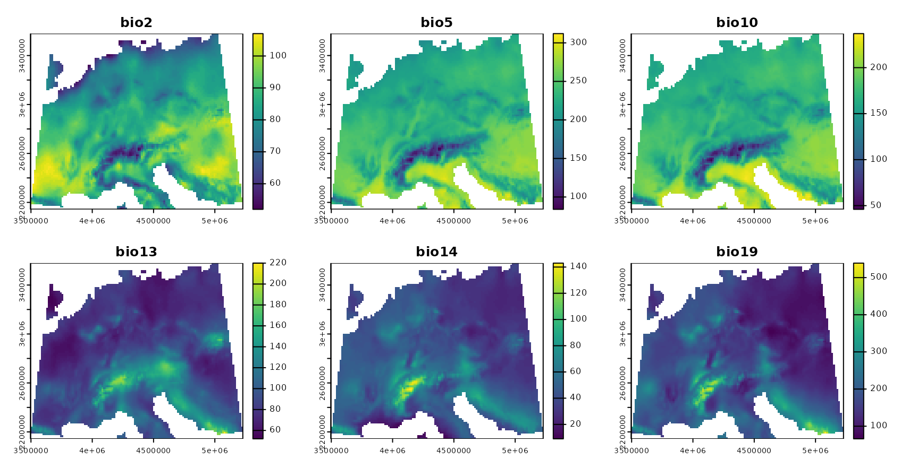
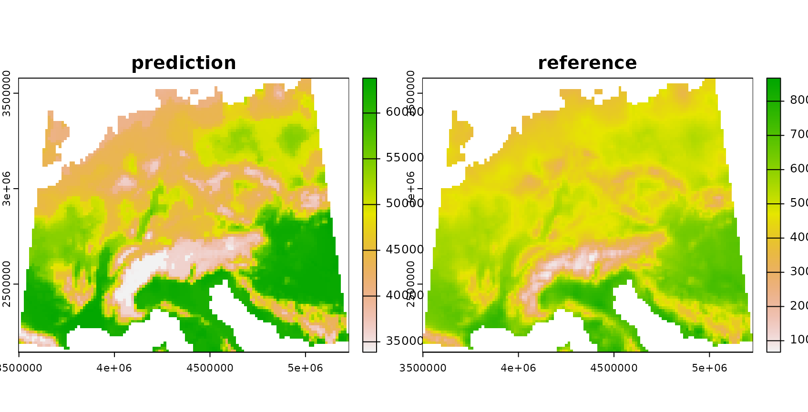
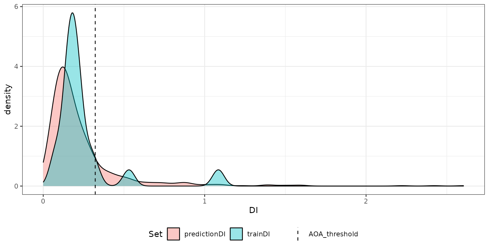
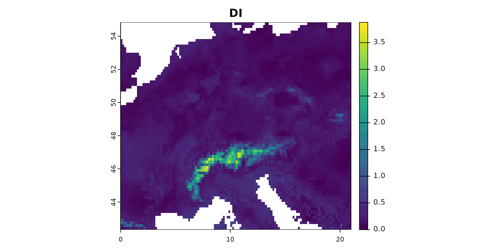
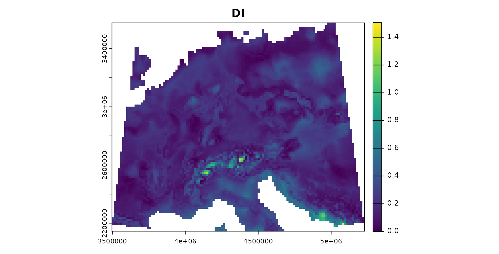

2. Area of applicability of spatial prediction models
Hanna Meyer
2022-02-16
Source:vignettes/cast02-AOA-tutorial.Rmd
cast02-AOA-tutorial.RmdIntroduction
In spatial predictive mapping, models are often applied to make predictions far beyond sampling locations (i.e. field observations used to map a variable even on a global scale), where new locations might considerably differ in their environmental properties. However, areas in the predictor space without support of training data are problematic. The model has no knowledge about these environments and predictions for such areas have to be considered highly uncertain.
Here we implement the methodology described in Meyer&Pebesma (2021) to estimate the “area of applicability” (AOA) of spatial prediction models. The AOA is defined as the area where we enabled the model to learn about relationships based on the training data, and where the estimated cross-validation performance holds. To delineate the AOA, first an dissimilarity index (DI) is calculated that is based on distances to the training data in the multidimensional predictor variable space. To account for relevance of predictor variables responsible for prediction patterns we weight variables by the model-derived importance scores prior to distance calculation. The AOA is then derived by applying a threshold based on the DI observed in the training data using cross-validation.
This tutorial shows an example of how to estimate the area of applicability of spatial prediction models.
For further information see: Meyer, H., & Pebesma, E. (2021). Predicting into unknown space? Estimating the area of applicability of spatial prediction models. Methods in Ecology and Evolution, 12, 1620– 1633. [https://doi.org/10.1111/2041-210X.13650]
Example 1: Using simulated data
Get data
Generate Predictors
As predictor variables, a set of bioclimatic variables are used (https://www.worldclim.org/). For this tutorial, they have been originally downloaded using the getData function from the raster package but cropped to an area in central Europe. The cropped data are provided in the CAST package.
predictors <- stack(system.file("extdata","bioclim.grd",package="CAST"))
spplot(stretch(predictors,0,1),col.regions=viridis(100))
Generate Response
To be able to test the reliability of the method, we’re using a simulated prediction task from the virtualspecies package. Therefore, a virtual response variable is simulated from the bioclimatic variables. See Leroy et al. 2016 for further information on this methodology.
response <- generateSpFromPCA(predictors,
means = c(3,1),sds = c(2,2), plot=F)$suitab.rasterSimulate sampling locations
To simulate a typical prediction task, field sampling locations are randomly selected. Here, we randomly select 20 points. Note that this is a very small data set, but used here to avoid long computation times.
mask <- predictors[[1]]
values(mask)[!is.na(values(mask))] <- 1
mask <- rasterToPolygons(mask)
set.seed(15)
samplepoints <- spsample(mask,20,"random")
spplot(response,col.regions=viridis(100),
sp.layout=list("sp.points", samplepoints, col = "red", first = FALSE, cex=2))
Model training
Next, a machine learning algorithm will be applied to learn the relationships between predictors and response.
Prepare data
Therefore, predictors and response are extracted for the sampling locations.
trainDat <- extract(predictors,samplepoints,df=TRUE)
trainDat$response <- extract (response,samplepoints)
trainDat <- trainDat[complete.cases(trainDat),]Train the model
Random Forest is applied here as machine learning algorithm (others can be used as well, as long as variable importance is returned). The model is validated by cross-validation to estimate the prediction error.
set.seed(10)
model <- train(trainDat[,names(predictors)],
trainDat$response,
method="rf",
importance=TRUE,
trControl = trainControl(method="cv"))
print(model)## Random Forest
##
## 20 samples
## 6 predictor
##
## No pre-processing
## Resampling: Cross-Validated (10 fold)
## Summary of sample sizes: 18, 18, 18, 18, 18, 18, ...
## Resampling results across tuning parameters:
##
## mtry RMSE Rsquared MAE
## 2 0.1103267 1 0.0962007
## 4 0.1200531 1 0.1025987
## 6 0.1187460 1 0.1014125
##
## RMSE was used to select the optimal model using the smallest value.
## The final value used for the model was mtry = 2.Variable importance
The estimation of the AOA will require the importance of the individual predictor variables.
AOA Calculation
The visualization above shows the predictions made by the model. In the next step, the DI and AOA will be calculated.
The AOA calculation takes the model as input to extract the importance of the predictors, used as weights in multidimensional distance calculation. Note that the AOA can also be calculated without a trained model (i.e. using training data and new data only). In this case all predictor variables are treated equally important (unless weights are given in form of a table).
## [1] "aoa"
names(AOA)## [1] "parameters" "DI" "AOA"
print(AOA)## DI:
## class : RasterLayer
## band : 1 (of 6 bands)
## dimensions : 75, 126, 9450 (nrow, ncol, ncell)
## resolution : 0.1666667, 0.1666667 (x, y)
## extent : 0, 21, 42.33333, 54.83333 (xmin, xmax, ymin, ymax)
## crs : +proj=longlat +datum=WGS84 +ellps=WGS84 +towgs84=0,0,0
## source : memory
## names : DI
## values : 0, 4.35002 (min, max)
##
## AOA:
## class : RasterLayer
## dimensions : 75, 126, 9450 (nrow, ncol, ncell)
## resolution : 0.1666667, 0.1666667 (x, y)
## extent : 0, 21, 42.33333, 54.83333 (xmin, xmax, ymin, ymax)
## crs : +proj=longlat +datum=WGS84 +ellps=WGS84 +towgs84=0,0,0
## source : memory
## names : AOA
## values : 0, 1 (min, max)
##
##
##
## Predictor Weights:
## bio2 bio5 bio10 bio13 bio14 bio19
## 1 0.1683883 7.203433 10.84442 5.490218 8.340626 5.558477
##
##
## AOA Threshold: 0.5850463The output of the aoa function are two raster data: The first is the DI that is the normalized and weighted minimum distance to a nearest training data point divided by the average distance within the training data. The AOA is derived from the DI by using a threshold. The threshold is the (outlier-removed) maximum DI observed in the training data where the DI of the training data is calculated by considering the cross-validation folds. The used threshold and all relevant information about the training data DI is returned in the parameters list entry.
grid.arrange(
spplot(truediff,col.regions=viridis(100),main="true prediction error"),
spplot(AOA$DI,col.regions=viridis(100),main="DI"),
spplot(prediction, col.regions=viridis(100),main="prediction for AOA")+ spplot(AOA$AOA,col.regions=c("grey","transparent")), ncol=3)
The patterns in the DI are in general agreement with the true prediction error. Very high values are present in the Alps, as they have not been covered by training data but feature very distinct environmental conditions. Since the DI values for these areas are above the threshold, we regard this area as outside the AOA.
Training data DI Calculation
The parameters of the AOA output are the result of the function trainDI which is called internally by aoa but can also be computed independently. It calculates the Dissimilarity Index (DI) of the data used for model training which is needed to determine the DI threshold used for the AOA estimation.
## [1] "trainDI"
class(TDI)## [1] "trainDI"
names(TDI)## [1] "train" "weight" "variables"
## [4] "catvars" "scaleparam" "trainDist_avrg"
## [7] "trainDist_avrgmean" "trainDI" "threshold"
## [10] "lower_threshold"
print(TDI)## DI of 20 observation
## Predictors: bio2 bio5 bio10 bio13 bio14 bio19
##
## AOA Threshold: 0.5850463Plotting a trainDI object displays the distribution of the DI of the training data together with the lower and upper AOA thresholds (vertical lines).
plot(TDI)
AOA for spatially clustered data?
The example above had randomly distributed training samples. However, sampling locations might also be highly clustered in space. In this case, the random cross-validation is not meaningful (see e.g. Meyer et al. 2018, Meyer et al. 2019, Valavi et al. 2019, Roberts et al. 2018, Pohjankukka et al. 2017, Brenning 2012)
Also the threshold for the AOA is not reliable, because it is based in distance to a nearest data point within the training data (which is usually very small when data are clustered). Instead, cross-validation should be based on a leave-cluster-out approach, and the AOA estimation based on distances to a nearest data point not located in the same spatial cluster.
To show how this looks like, we use 15 spatial locations and simulate 5 data points around each location.
samplepoints <- csample(mask,75,15,maxdist=0.20,seed=15)
spplot(response,col.regions=viridis(100),
sp.layout=list("sp.points", samplepoints, col = "red", first = FALSE, cex=2))
trainDat <- extract(predictors,samplepoints,df=TRUE)
trainDat$response <- extract (response,samplepoints)
trainDat <- merge(trainDat,samplepoints,by.x="ID",by.y="ID")
trainDat <- trainDat[complete.cases(trainDat),]We first train a model with (in this case) inappropriate random cross-validation.
set.seed(10)
model_random <- train(trainDat[,names(predictors)],
trainDat$response,
method="rf",
importance=TRUE,
trControl = trainControl(method="cv"))
prediction_random <- predict(predictors,model_random)
print(model_random)## Random Forest
##
## 74 samples
## 6 predictor
##
## No pre-processing
## Resampling: Cross-Validated (10 fold)
## Summary of sample sizes: 67, 66, 67, 67, 66, 68, ...
## Resampling results across tuning parameters:
##
## mtry RMSE Rsquared MAE
## 2 0.04091038 0.9808718 0.02701173
## 4 0.04229663 0.9754960 0.02747445
## 6 0.04475604 0.9655655 0.02799310
##
## RMSE was used to select the optimal model using the smallest value.
## The final value used for the model was mtry = 2.…and a model based on leave-cluster-out cross-validation.
folds <- CreateSpacetimeFolds(trainDat, spacevar="clstrID",k=10)
set.seed(15)
model <- train(trainDat[,names(predictors)],
trainDat$response,
method="rf",
importance=TRUE,
tuneGrid = expand.grid(mtry = c(2:length(names(predictors)))),
trControl = trainControl(method="cv",index=folds$index))
print(model)## Random Forest
##
## 74 samples
## 6 predictor
##
## No pre-processing
## Resampling: Cross-Validated (10 fold)
## Summary of sample sizes: 65, 64, 69, 64, 69, 69, ...
## Resampling results across tuning parameters:
##
## mtry RMSE Rsquared MAE
## 2 0.09699313 0.9400206 0.08501311
## 3 0.09472860 0.8649564 0.08603081
## 4 0.08904630 0.8859366 0.08042506
## 5 0.08716000 0.8586236 0.07832948
## 6 0.09411451 0.8148868 0.08357705
##
## RMSE was used to select the optimal model using the smallest value.
## The final value used for the model was mtry = 5.
prediction <- predict(predictors,model)The AOA is then calculated (for comparison) using the model validated by random cross-validation, and second by taking the spatial clusters into account and calculating the threshold based on minimum distances to a nearest training point not located in the same cluster. This is done in the aoa function, where the folds used for cross-validation are automatically extracted from the model.
grid.arrange(spplot(AOA_spatial$DI,col.regions=viridis(100),main="DI"),
spplot(prediction, col.regions=viridis(100),main="prediction for AOA \n(spatial CV error applies)")+
spplot(AOA_spatial$AOA,col.regions=c("grey","transparent")),
spplot(prediction_random, col.regions=viridis(100),main="prediction for AOA \n(random CV error applies)")+
spplot(AOA_random$AOA,col.regions=c("grey","transparent")),
ncol=3)
Note that the AOA is much larger for the spatial approach. However, the spatial cross-validation error is considerably larger, hence also the area for which this error applies is larger. The random cross-validation performance is very high, however, the area to which the performance applies is small. This fact is also apparent if you plot the aoa objects which will display the distributions of the DI of the training data as well as the DI of the new data. For random CV most of the predictionDI is larger than the AOA threshold determined by the trainDI. Using spatial CV, the predictionDI is well within the DI of the training samples.
grid.arrange(plot(AOA_spatial) + ggplot2::ggtitle("Spatial CV"),
plot(AOA_random) + ggplot2::ggtitle("Random CV"), ncol = 2)
Comparison prediction error with model error
Since we used a simulated response variable, we can now compare the prediction error within the AOA with the model error, assuming that the model error applies inside the AOA but not outside.
###for the spatial CV:
RMSE(values(prediction)[values(AOA_spatial$AOA)==1],values(response)[values(AOA_spatial$AOA)==1])## [1] 0.1213942## [1] 0.5353775
model$results## mtry RMSE Rsquared MAE RMSESD RsquaredSD MAESD
## 1 2 0.09699313 0.9400206 0.08501311 0.06988480 0.09556929 0.06224228
## 2 3 0.09472860 0.8649564 0.08603081 0.06900899 0.19276546 0.06419389
## 3 4 0.08904630 0.8859366 0.08042506 0.06986285 0.11612124 0.06564410
## 4 5 0.08716000 0.8586236 0.07832948 0.07222770 0.13989462 0.06827500
## 5 6 0.09411451 0.8148868 0.08357705 0.07655589 0.20333811 0.07406734
###and for the random CV:
RMSE(values(prediction_random)[values(AOA_random$AOA)==1],values(response)[values(AOA_random$AOA)==1])## [1] 0.01902935
RMSE(values(prediction_random)[values(AOA_random$AOA)==0],values(response)[values(AOA_random$AOA)==1])## [1] 0.3444048
model_random$results## mtry RMSE Rsquared MAE RMSESD RsquaredSD MAESD
## 1 2 0.04091038 0.9808718 0.02701173 0.02830469 0.02843866 0.01841331
## 2 4 0.04229663 0.9754960 0.02747445 0.02672590 0.03655193 0.01611715
## 3 6 0.04475604 0.9655655 0.02799310 0.03175719 0.05163937 0.01799873The results indicate that there is a high agreement between the model CV error (RMSE) and the true prediction RMSE. This is the case for both, the random as well as the spatial model.
Relationship between the DI and the performance measure
The relationship between error and DI can be used to limit predictions to an area (within the AOA) where a required performance (e.g. RMSE, R2, Kappa, Accuracy) applies. This can be done using the result of calibrate_aoa which used the relationship analyzed in a window of DI values. The corresponding model (here: shape constrained additive models which is the default: Monotone increasing P-splines with the dimension of the basis used to represent the smooth term is 6 and a 2nd order penalty.) can be used to estimate the performance on a pixel level, which then allows limiting predictions using a threshold. Note that we used a multi-purpose CV to estimate the relationship between the DI and the RMSE here (see details in the paper).
AOA_calib <- calibrate_aoa(AOA_spatial,model,window.size = 5,length.out = 5, multiCV=TRUE,showPlot=FALSE)
AOA_calib$plotExample 2: A real-world example
The example above used simulated data so that it allows to analyze the reliability of the AOA. However, a simulated area-wide response is not available in usual prediction tasks. Therefore, as a second example the AOA is estimated for a dataset that has point observations as a reference only.
Data and preprocessing
To do so, we will work with the cookfarm dataset, described in e.g. Gasch et al 2015. The dataset included in CAST is a re-structured dataset. Find more details also in the vignette “Introduction to CAST”. We will use soil moisture (VW) as response variable here. Hence, we’re aiming at making a spatial continuous prediction based on limited measurements from data loggers.
dat <- get(load(system.file("extdata","Cookfarm.RData",package="CAST")))
# calculate average of VW for each sampling site:
dat <- aggregate(dat[,c("VW","Easting","Northing")],by=list(as.character(dat$SOURCEID)),mean)
# create sf object from the data:
pts <- st_as_sf(dat,coords=c("Easting","Northing"))
##### Extract Predictors for the locations of the sampling points
studyArea <- stack(system.file("extdata","predictors_2012-03-25.grd",package="CAST"))
st_crs(pts) <- crs(studyArea)
trainDat <- extract(studyArea,pts,df=TRUE)
pts$ID <- 1:nrow(pts)
trainDat <- merge(trainDat,pts,by.x="ID",by.y="ID")
# The final training dataset with potential predictors and VW:
head(trainDat)## ID DEM TWI BLD NDRE.M NDRE.Sd Bt Easting Northing
## 1 1 788.1906 4.304258 1.42 -0.051189531 0.2506899 0.0000 493384 5180587
## 2 2 788.3813 3.863605 1.29 -0.046459336 0.1754623 0.0000 493514 5180567
## 3 3 790.5244 3.947488 1.36 -0.040845532 0.2225785 0.0000 493574 5180577
## 4 4 775.7229 5.395786 1.55 -0.004329725 0.2099845 0.0501 493244 5180587
## 5 5 796.7618 3.534822 1.31 0.027252737 0.2002646 0.0000 493624 5180607
## 6 6 795.8370 3.815516 1.40 -0.123434804 0.2180606 0.0000 493694 5180607
## MinT_wrcc MaxT_wrcc Precip_cum cday Precip_wrcc Group.1 VW
## 1 1.1 36.2 10.6 15425 0 CAF003 0.2938029
## 2 1.1 36.2 10.6 15425 0 CAF007 0.2737227
## 3 1.1 36.2 10.6 15425 0 CAF009 0.2723993
## 4 1.1 36.2 10.6 15425 0 CAF019 0.3134010
## 5 1.1 36.2 10.6 15425 0 CAF031 0.2751161
## 6 1.1 36.2 10.6 15425 0 CAF033 0.2602674
## geometry
## 1 POINT (493383.1 5180586)
## 2 POINT (493510.7 5180568)
## 3 POINT (493574.6 5180573)
## 4 POINT (493246.6 5180590)
## 5 POINT (493628.3 5180612)
## 6 POINT (493692.2 5180610)Model training and prediction
A set of variables is used as predictors for VW in a random Forest model. The model is validated with a leave one out cross-validation. Note that the model performance is very low, due to the small dataset being used here (and for this small dataset a low ability of the predictors to model VW).
predictors <- c("DEM","NDRE.Sd","TWI","Bt")
response <- "VW"
model <- train(trainDat[,predictors],trainDat[,response],
method="rf",tuneLength=3,importance=TRUE,
trControl=trainControl(method="LOOCV"))
model## Random Forest
##
## 42 samples
## 4 predictor
##
## No pre-processing
## Resampling: Leave-One-Out Cross-Validation
## Summary of sample sizes: 41, 41, 41, 41, 41, 41, ...
## Resampling results across tuning parameters:
##
## mtry RMSE Rsquared MAE
## 2 0.03842827 0.005425658 0.03051082
## 3 0.03933811 0.001429581 0.03134197
## 4 0.03938455 0.003577853 0.03185219
##
## RMSE was used to select the optimal model using the smallest value.
## The final value used for the model was mtry = 2.AOA estimation
Next we’re limiting the predictions to the AOA. Predictions outside the AOA should be excluded.
AOA <- aoa(studyArea,model)
#### Plot results:
grid.arrange(spplot(AOA$DI,col.regions=viridis(100),main="DI with sampling locations (red)")+
spplot(as_Spatial(pts),zcol="ID",col.regions="red"),
spplot(prediction, col.regions=viridis(100),main="prediction for AOA \n(LOOCV error applies)")+ spplot(AOA$AOA,col.regions=c("grey","transparent")),ncol=2)
Final notes
- The AOA is estimated based on training data and new data (i.e. raster stack of the entire area of interest). The trained model are only used for getting the variable importance needed to weight predictor variables. These can be given as a table either, so the approach can be used with other packages than caret as well.
- Knowledge on the AOA is important when predictions are used as a baseline for decision making or subsequent environmental modelling.
- We suggest that the AOA should be provided alongside the prediction map and complementary to the communication of validation performances.